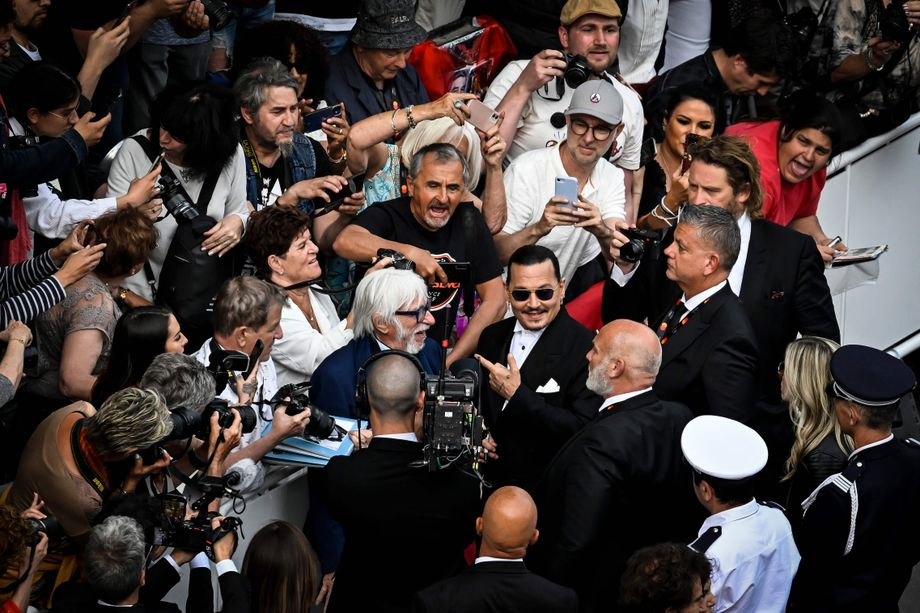
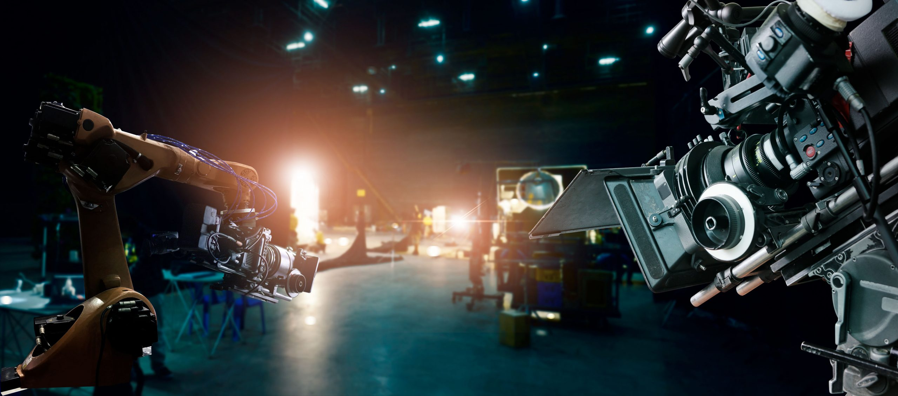

Our film blog
Here you can find the latest posts of our own official blog.
Our Latest Blog Posts
My Amazing Experience at the Cannes Film Festival 2023
Published on May 21, 2023 by Gregor Enengl
Introduction
Attending the Cannes Film Festival 2023 was a dream come true for me. As a film enthusiast, I had always longed to experience the glamour, excitement, and cinematic brilliance that the festival offers. In this blog post, I will share my incredible journey and highlight some of the memorable moments from my time at the festival.
Arrival and First Impressions
Stepping onto the red carpet at the prestigious Palais des Festivals was an exhilarating experience. The energy in the air was palpable as filmmakers, actors, and film enthusiasts from around the world gathered to celebrate the art of cinema. The grandeur of the venue and the bustling atmosphere set the stage for an unforgettable adventure.
Screenings and Film Premieres
During my time at the festival, I had the privilege of attending several screenings and film premieres. From thought-provoking dramas to visually stunning masterpieces, each film left a lasting impact on me. Witnessing the reactions of the audience and engaging in discussions with fellow cinephiles added to the overall magic of the festival.
Film Premieres
- "Dreamscape" - Directed by Jane Anderson
- "Echoes of Yesterday" - Directed by Maria Rodriguez
- "The Midnight Zone" - Directed by Antoine Dupont
- "Shadows of Hope" - Directed by Sofia Torres
Films Shown
- "The Secret Garden" - Directed by Marc Forster
- "A Tale of Two Cities" - Directed by Christopher Nolan
- "Eternal Symphony" - Directed by Luiz Fernandez
- "Under the Starry Sky" - Directed by Sofia Martinez
Encounters with Industry Professionals
One of the most exciting aspects of the Cannes Film Festival is the opportunity to meet and interact with industry professionals. I had the chance to attend panel discussions, workshops, and networking events where I connected with directors, producers, and actors. Their insights and experiences provided valuable inspiration and deepened my appreciation for the art of filmmaking.
The Glitz and Glamour of the Red Carpet
The red carpet events at Cannes are legendary, and I was fortunate enough to be a part of them. Witnessing the stars and celebrities walk the red carpet in their stunning attire was like stepping into a fairytale. The flashes of cameras, the vibrant fashion, and the electric atmosphere created an ambiance of pure elegance and sophistication.
Conclusion
Attending the Cannes Film Festival 2023 was an experience I will cherish for a lifetime. It was a celebration of cinema, creativity, and the power of storytelling. The festival provided a platform for diverse voices and unique perspectives, leaving a lasting impact on all who attended. I am grateful for the memories, the films, and the connections made during this extraordinary journey.
The Rise of Streaming Services: Transforming the Film Industry
Published on May 19, 2023 by Gregor Enengl

Introduction
In recent years, the film industry has witnessed a significant transformation with the rise of streaming services. Streaming platforms like Netflix, Amazon Prime Video, and Disney+ have revolutionized the way we consume films, challenging traditional distribution models and reshaping the cinematic landscape. In this blog post, we will explore the impact of streaming services on the film industry and the opportunities and challenges they present.
Access to a Vast Library of Films
One of the greatest advantages of streaming services is the extensive library of films they offer. Subscribers can access a wide range of movies, spanning different genres, eras, and cultures, all at the touch of a button. This democratization of film distribution allows viewers to explore diverse content that might not have received wide theatrical releases.
Original Content and Creative Freedom
Streaming services have also emerged as major players in producing original content. These platforms have been investing heavily in creating exclusive movies and series, attracting top talent and fostering creativity. The absence of traditional studio constraints provides filmmakers with more creative freedom, enabling them to explore unconventional narratives and take risks that might not have been possible within the traditional studio system.
Changing Viewing Habits and On-Demand Experience
The convenience of streaming services has significantly impacted viewers' habits. The ability to watch films at any time, on any device, has led to a shift from scheduled programming to on-demand consumption. Binge-watching entire seasons or discovering hidden gems has become the norm, allowing audiences to engage more deeply with the content they love.
Challenges and Disruptions in the Industry
While streaming services have brought numerous opportunities, they have also disrupted traditional distribution models and posed challenges to the film industry. The decline of physical media sales, the impact on theatrical exhibition, and the complex issue of revenue sharing and compensation for filmmakers are among the topics that have sparked debates and prompted industry-wide discussions.
Impact on Film Festivals and Awards
The rise of streaming services has also had a profound impact on film festivals and awards. Many festivals now embrace streaming platforms as a means to reach broader audiences and showcase a diverse range of films. Additionally, streaming services have become significant contenders during award season, with their original productions earning critical acclaim and securing nominations and wins.
The Future of the Film Industry
The future of the film industry undoubtedly lies in the realm of streaming services. As technology continues to evolve and consumer preferences shift, we can expect further innovations in content delivery, enhanced viewing experiences, and the emergence of new players in the streaming landscape. The film industry will continue to adapt and navigate the evolving landscape to meet the demands of audiences.
Conclusion
The rise of streaming services has transformed the film industry, offering viewers unparalleled access to diverse content, fostering creativity, and changing the way films are consumed. While challenges and debates persist, there is no denying the significant impact streaming services have had on the cinematic landscape. As we move forward, it is crucial for filmmakers, industry professionals, and audiences to embrace these changes, explore new opportunities, and ensure the continued growth and vibrancy of the film industry.
The Rise of AI and Deepfake Technology in Films
Published on May 14, 2023
Introduction
In recent years, the film industry has witnessed a rapid advancement in artificial intelligence (AI) and deepfake technology, leading to new possibilities and challenges in the creation and manipulation of digital content. In this blog post, we will explore the impact of AI and deepfake technology on films, the benefits it offers, and the ethical considerations it raises.
Enhancing Visual Effects and CGI
AI and deepfake technology have revolutionized visual effects (VFX) and computer-generated imagery (CGI) in films. With the ability to generate realistic graphics, simulate natural phenomena, and seamlessly blend live-action footage with virtual elements, filmmakers can create immersive and visually stunning worlds that were previously unimaginable.
Facial Reenactment and Character Recreation
Deepfake technology has enabled filmmakers to recreate the likeness of actors and bring deceased characters back to the screen. By analyzing existing footage and applying machine learning algorithms, AI can generate highly realistic performances, allowing actors to be digitally rejuvenated or resurrected. This opens up new storytelling possibilities and challenges traditional notions of casting and performance.
Preserving Film Legacy and Restoring Old Footage
AI algorithms have been instrumental in the restoration of old and damaged films. Through machine learning techniques, films can be digitally repaired, colorized, and enhanced, preserving cinematic history for future generations. Additionally, AI-based systems can analyze and categorize vast archives of footage, making it easier for filmmakers and researchers to access and utilize historical content.
Ethical Considerations and Misuse of Technology
While AI and deepfake technology offer immense creative possibilities, they also raise ethical concerns. The ability to manipulate and alter reality through convincing fake videos raises questions of consent, privacy, and the potential for misuse. Filmmakers and audiences alike must navigate these ethical dilemmas, ensuring responsible and transparent use of this technology.
The Future of Filmmaking and AI Collaboration
The integration of AI and deepfake technology in the film industry is just the beginning. As AI continues to evolve, we can expect further advancements in character creation, scriptwriting, and audience interaction. Filmmakers will increasingly collaborate with AI systems to streamline production processes, generate innovative storylines, and create immersive cinematic experiences.
Conclusion
The rise of AI and deepfake technology has transformed the way films are made, offering unprecedented opportunities for visual effects, character recreation, and film restoration. As this technology continues to advance, it is crucial for filmmakers and audiences to navigate the ethical implications and ensure responsible use. The future of filmmaking lies in harnessing the potential of AI while upholding artistic integrity and ethical considerations.